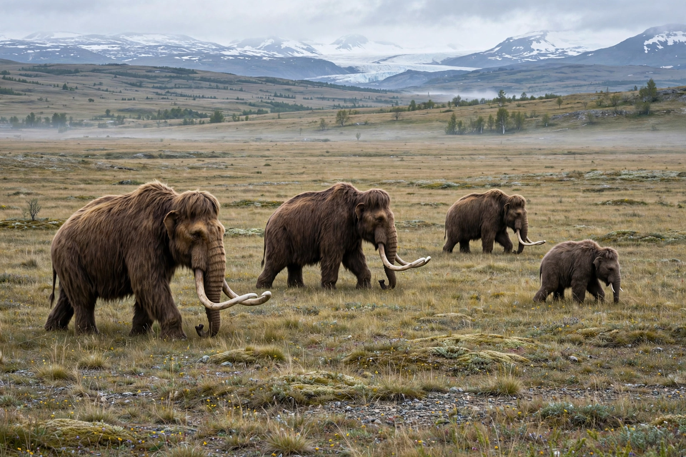

The mammoth steppe, or steppe-tundra, was Earth's most extensive biome during the Last Glacial Maximum, stretching from Spain across Eurasia and Beringia to Canada.

Mammoth steppeCold, dry, windy and sunny, with productive grasses, herbs and willow shrubs maintained by grazing megafauna and nutrient cycling. Despite glacial cold it supported abundant large animals — unlike modern wet tundra.
Woolly mammoths, woolly rhinoceroses, steppe bison, horses, musk oxen, saiga, and predators including cave lions, wolves and hominins. See Woolly mammoth, Last Glacial Maximum.
As climate warmed and moistened at the end of the Pleistocene (~14,500–11,500 years ago), combined with human hunting, the biome fragmented and its megafauna largely went extinct. Rewilding proposals such as Pleistocene Park in Siberia aim to restore steppe grazing systems.